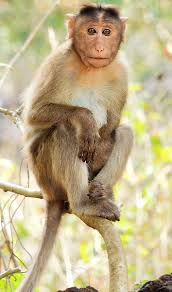
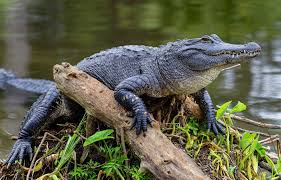

Zoo Animals
Our Animals, Their Behaviors, and Their Diets
Bears

- Ollie
- Mona
Bears are large and powerful mammals. They have sharp claws that they use to dig, climb, and catch prey. Bears are omnivores, so they consume a wide variety of foods, from plants, such as berries, to small animals like fish. Bears are typically solitary and need ample space with an exception for mothers and their cubs. Observing and interacting with bears requires caution, especially when they are protecting their cubs or eating. For more information about this animal, click here.
Giraffes
- Frankie
- Coconut
Giraffes are easily identifiable with their long necks and legs that help them tower over all other land animals. Their diet requires a large amount of fiber and they use their height to achieve this by reaching leaves high up in trees. They are generally gentle in nature, but when threatened can deliver powerful and deadly kicks. Giraffes are social and usually live and move in groups. For more information about this animal, click here.
Lions

- Mella
- Karl
While much larger than the typical house-cat, lions are a member of the feline family. They don't share size in common with their house-cat family members, but they are heavy sleepers, sleeping 16-20 hours a day. Their yellow coats help them blend into their habitats which helps them hunt as they are carnivores. Lions are social animals and live in groups called prides. For more information about this animal, click here.
Monkeys
- Cookie
- Earl
- Banana Pudding
Monkeys, like humans, are primates. They have opposable thumbs, dexterous fingers, and tails that help them hold onto branches which helps them climb. Monkeys are highly social and engage in social behaviors such as grooming, playing, and vocalizing. Most monkeys are omnivores and mostly eat fruits, leaves, insects, and small animals. For more information about this animal, click here.
Alligators
- Wren
- Aspen
- Mika
Alligators are a member of the reptile family and sport large teeth, strong jaws, and powerful tails. Their color is usually dark green to help them blend in to the waters in which they inhabit. Alligators are carnivorous and feed on fish, birds, and other small animals. Alligators are territorial and solitary, so interns should maintain a safe distance. For more information about this animal, click here.
Thank you
It's our responsibility to take care of these animals with the utmost respect. We hope that this helps you better understand how to best care for and oversee these beautiful creatures while you're a part of the zoo family.